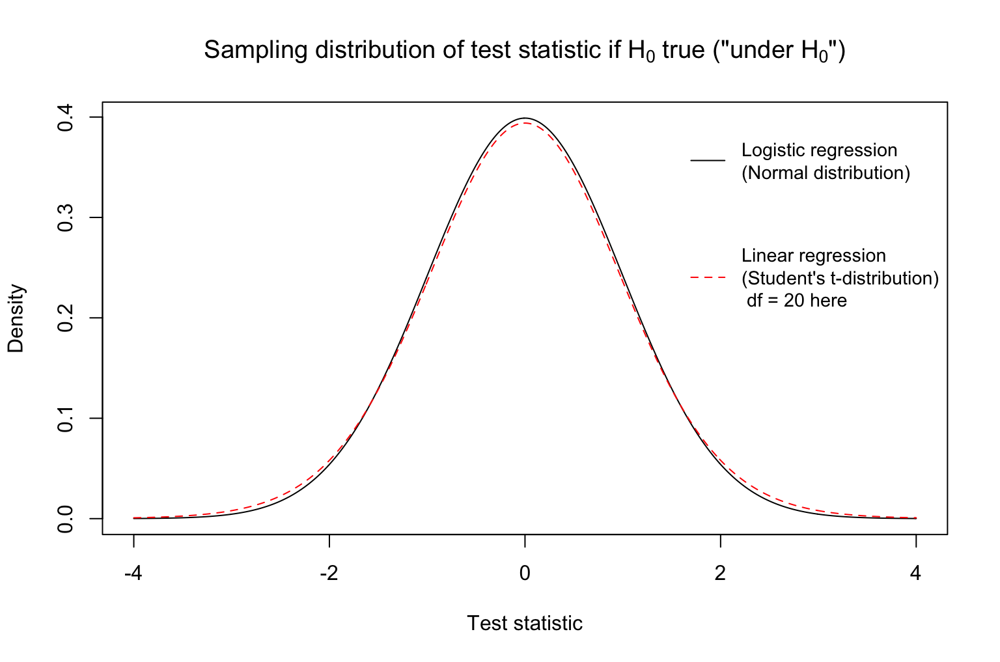
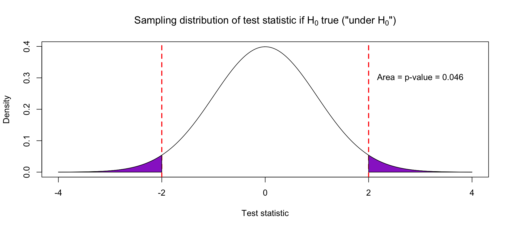

6.3 Hypothesis Testing
Hypothesis testing is another tool that can be used for statistical inference. Let’s warm up to the ideas of hypothesis testing by considering two broad types of scientific questions: (1) Is there a relationship? (2) What is the relationship?
Suppose that we are thinking about the relationship between housing prices and square footage. Accounting for sampling variation…
- …is there a relationship between price and living area?
- …what is the relationship between price and living area?
Whether by the Central Limit Theorem (mathematical theory) or bootstrapping, confidence intervals provide a range of plausible values for the true population parameter and allow us to answer both types of questions:
- Is there a relationship between price and living area?
- Is the no difference/relationship value in the interval?
- What is the relationship between price and living area?
- Look at the estimate and the values in the interval
Hypothesis testing is a general framework for answering questions of the first type. It is a general framework for making decisions between two “theories”.
Example 1
Decide between: true support for a law = 50% vs. true support \(\neq\) 50%Example 2
In the model \(\text{Price} = \beta_0 + \beta_1\text{Area}\), decide between \(\beta_1 = 0\) and \(\beta_1 \neq 0\).
In a hypothesis test, we use data to decide between two “hypotheses” labeled as follows:
Null hypothesis (\(H_0\) = “H naught”)
Hypothesis that is assumed to be true by default.
A status quo hypothesis: hypothesis of no effect/relationship/difference.Alternative hypothesis (\(H_A\) or \(H_1\))
A non-status quo hypothesis.
Claim being made about the population.
6.3.1 Test statistics
Let’s consider the question: Is there a relationship between house price and living area? We can try to answer that with the linear regression model below:
\[\text{Price} = \beta_0 + \beta_1\text{Area}\]
We would phrase our null and alternative hypotheses as follows:
\[H_0: \beta_1 = 0 \qquad \text{vs.} \qquad H_A: \beta_1 \neq 0\]
The null hypothesis \(H_0\) describes the situation of “no relationship” because it hypothesizes that the true slope \(\beta_1\) is 0. The alternative hypothesis posits a relationship: the true slope \(\beta_1\) is not 0. That is, there is not no relationship. (Double negatives!)
To gather evidence, we collect data and fit a model. From the model, we can compute a test statistic, which tells us how far the observed slope is from the null hypothesis value of 0 (called the null value). The test statistic is a discrepancy measure where large values indicate higher discrepancy with \(H_0\).
The test statistic below is a reasonable proposal:
\[\text{Test statistic} = \frac{\text{estimate} - \text{null value}}{\text{std. error of estimate}}\]
It looks like a z-score. It expresses: how far away is our estimate from the null value in units of standard error? With large values (in magnitude) of the test statistic, our data (our estimate) is discrepant with what the null hypothesis proposes because our estimate is quite far away from the null value in standard error units.
6.3.2 Logic of hypothesis testing
How large in magnitude must the test statistic be in order to make a decision between \(H_0\) and \(H_A\)? We will use another metric called a p-value.
Assuming \(H_0\) is true, we ask: What is the chance of observing a test statistic which is “as or even more extreme” than the one we just saw? This probability is called a p-value.
If our test statistic is large, then our estimate is quite far away from the null value (in standard error units), and then the chance of observing someone this large or larger (assuming \(H_0\) is true) would be very small. A large test statistic leads to a small p-value.
If our test statistic is small, then our estimate is quite close to the null value (in standard error units), and then the chance of observing someone this large or larger (assuming \(H_0\) is true) would be very large. A small test statistic leads to a large p-value.
6.3.2.1 Making Decisions
If the p-value is “small”, then we reject \(H_0\) in favor of \(H_A\). Why? A small p-value (by definition) says that if the null hypotheses were indeed true, we are unlikely to have seen such an extreme discrepancy measure (test statistic). We made an assumption that the null is true, and operating under that assumption, we observed something odd and unusual. This makes us reconsider our null hypothesis.
How small is small enough for a p-value? We will set a threshold \(\alpha\). P-values less than this threshold will be “small enough”. When we talk about error rates of the decisions associated with rejecting or not rejecting the null hypothesis, the meaning of \(\alpha\) will become more clear.
6.3.3 Summary of procedure
- State hypotheses \(H_0\) and \(H_A\).
- Select \(\alpha\), a threshold for what is considered to be a small enough p-value.
- Calculate a test statistic
- Calculate the corresponding p-value
- Make a decision:
- If p-value < \(\alpha\), reject \(H_0\) and accept \(H_A\).
- Otherwise, we fail to reject \(H_0\) for lack of evidence.
(Jurors’ decisions are “guilty” and “not guilty”. Not “guilty” and “innocent”.)
6.3.4 Testing single model coefficients
A big emphasis of our course is regression models. It turns out that many scientific questions of interest can be framed with regression models.
In the summary() output, R performs the following hypothesis test by default (for any regression coefficient \(\beta\)):
\[H_0: \beta = 0 \qquad \text{vs} \qquad H_A: \beta \neq 0\]
\[\text{Test statistic} = \frac{\text{estimate} - \text{null value}}{\text{std. error of estimate}} = \frac{\text{estimate} - 0}{\text{std. error of estimate}} \]
Note that test statistics are random variables! Why? Because they are based on our random sample of data. Thus it will be helpful to understand the distributions of test statistics in terms of probability density functions.
If \(H_0\) were true, where would the probability density function of the test statistic be centered?
6.3.5 Distributions of test statistics
What test statistics are we likely to get if \(H_0\) is true? The probability density function of the test statistic “under \(H_0\)” (that is, if \(H_0\) is true) is shown below. Note that it is centered at 0. This distribution shows that if indeed the null is true, there is variation in the test statistics we might obtain from random samples, but most test statistics are around zero.
It would be very unlikely for us to get a pretty large (extreme) test statistic if indeed \(H_0\) were true. Why? The density drops rapidly at more extreme values.

6.3.6 Graphical description of p-values
Suppose that our observed test statistic is 2.
What test statistics are “as or more extreme”?
- Absolute value of test statistic is at least 2: \(|\text{Test statistic}| \geq 2\)
- In other words: \(\text{Test statistic} \geq 2\) and \(\text{Test statistic} \leq -2\)
The p-value corresponding to our test statistic is the area under the probability density function in those “as or more extreme” regions.

6.3.7 Example: Linear Regression
Below we fit a linear regression model of house price on living area:
homes <- read.delim("http://sites.williams.edu/rdeveaux/files/2014/09/Saratoga.txt")
mod_homes <- lm(Price ~ Living.Area, data = homes)
confint(mod_homes) ## 95% confidence interval by default## 2.5 % 97.5 %
## (Intercept) 3647.6958 23231.0922
## Living.Area 107.8616 118.3835## Estimate Std. Error t value Pr(>|t|)
## (Intercept) 13439.3940 4992.352849 2.691996 7.171207e-03
## Living.Area 113.1225 2.682341 42.173065 9.486240e-268The t value column is the test statistic, and the Pr(>|t|) column is the p-value. Note that the “t” comes from the Student t distribution.
- What are \(H_0\) and \(H_A\)?
We write the model \(\text{Price} = \beta_0 + \beta_1\text{Area}\).
\(H_0: \beta_1 = 0\) (There is no relationship between price and living area.)
\(H_A: \beta_1 \neq 0\) (There is a relationship between price and living area.)
- For a threshold \(\alpha = 0.05\), what is the decision regarding \(H_0\)?
Note that when you seeein R output, this means “10 to the power”. So9.486240e-268means \(9.49 \times 10^{-268}\). This p-value is less than our threshold, so we reject \(H_0\) and say that we have significant evidence for a relationship between price and living area. - Is this consistent with the confidence interval?
This result is consistent with the 95% confidence interval in that the interval does not contain 0.
6.3.8 Example: Logistic Regression
Below we fit a logistic regression model of whether a movie made a profit (response) on whether it is a history film:
movies <- read.csv("https://www.dropbox.com/s/73ad25v1epe0vpd/tmdb_movies.csv?dl=1")
mod_movies <- glm(profit==TRUE ~ History, data = movies, family = "binomial")
confint(mod_movies) ## 95% confidence interval by default## 2.5 % 97.5 %
## (Intercept) 0.09438169 0.2102419
## HistoryTRUE -0.26484980 0.3085225## Estimate Std. Error z value Pr(>|z|)
## (Intercept) 0.15226921 0.02955458 5.1521364 2.575356e-07
## HistoryTRUE 0.02074995 0.14604883 0.1420754 8.870204e-01The z value column is the test statistic, and the Pr(>|z|) column is the p-value. Note that the “z” refers to z-score and the Normal distribution.
Try for yourselves!
- What are \(H_0\) and \(H_A\)?
- For a threshold \(\alpha = 0.05\), what is the decision regarding \(H_0\)?
- Is this consistent with the confidence interval?
###Errors
Just as with model predictions, we may make errors when doing hypothesis tests.
We may decide to reject \(H_0\) when it is actually true. We may decide to not reject \(H_0\) when it is actually false.
We give these two types of errors names. Type 1 Error is when you reject \(H_0\) when it is actually true. This is a false positive because you are concluding there is a real relationship when there is none. This would happen if one study published that coffee causes cancer in one group of people, but no one else could actually replicate that result since coffee doesn’t actually cause cancer. Type 2 Error is when you don’t reject \(H_0\) when it is actually false. This is a false negative because you would conclude there is no real relationship when there is a real relationship. This happens when our sample size is not large enough to detect the real relationship due to the large amount of noise due to sampling variability.
We care about both of these types of errors. Sometimes we prioritize one over the other. Based on the framework presented, we control the chance of a Type 1 error through the confidence level/p-value threshold we used. In fact, the chance of a Type 1 Error is \(\alpha\),
\[P(\text{ Type 1 Error }) = P(\text{ Reject }H_0 ~|~H_0\text{ is true} ) = \alpha\]
Let \(\alpha = 0.05\) for a moment. If the Null Hypothesis (\(H_0\)) is actually true, then about 5% of the time, we’d get unusual test statistics just by chance. With those samples, we would incorrectly conclude that there was a real relationship.
The chance of a Type 2 Error is often notated as \(\beta\) (but this is not the same value as the slope),
\[P(\text{ Type 2 Error }) = P(\text{ Fail to Reject }H_0 ~|~H_0\text{ is false} ) = \beta\]
In order to calculate this probability, we’d need to know the value (or at least a good idea) of the true effect.